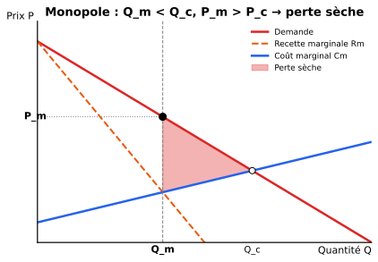
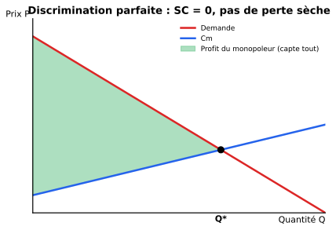
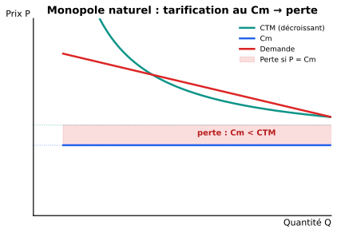

3 · Monopole et monopsone
Le monopole (vendeur unique) restreint la quantité pour faire monter le prix → quantité plus faible et prix plus élevé qu’en CP, ce qui crée une perte sèche sauf en cas de discrimination parfaite.
1 1. Données de base — qu’est-ce qu’un monopole ?
Un monopole = une seule firme vend un produit pour lequel il n’existe pas de substitut proche, et l’entrée est bloquée par des barrières.
1.1 Sources des barrières à l’entrée
| Type | Exemple |
|---|---|
| Légales | Brevets, licences, monopoles d’État |
| Économiques (naturelles) | Économies d’échelle, contrôle d’une ressource rare |
| Stratégiques | Capacité excédentaire, dumping, lock-in clients |
Si tu es la seule entreprise sur ton marché et que personne ne peut entrer (parce que t’as un brevet, ou parce que ça coûte des milliards pour démarrer), tu es en monopole. Tu n’es pas obligé de subir le prix — tu le choisis (mais à condition d’accepter une quantité plus faible).
2 2. Monopole non discriminant
La firme ne peut pas faire payer des prix différents → un seul prix pour tous.
2.1 La règle d’or : Rm = Cm
\[\boxed{\ Rm(q) = Cm(q)\ }\]
Attention : ici \(Rm \neq P\) ! La firme monopolistique fait face à la demande de marché entière, donc :
\[Rm(q) = P(q) + q \cdot P'(q)\]
Comme \(P'(q) < 0\) (la demande est décroissante), on a toujours \(Rm < P\).

Alors \(Rm = a - 2bQ\) — la pente de \(Rm\) est le double de celle de \(P\) (et même ordonnée à l’origine \(a\)).
C’est l’astuce la plus utile pour les exercices.
2.2 Conséquences vs concurrence parfaite
| Concurrence | Monopole | |
|---|---|---|
| Quantité | \(Q_c\) | \(Q_m < Q_c\) |
| Prix | \(P_c = Cm\) | \(P_m > P_c\) |
| Profit | 0 (LT) | > 0 (souvent positif même LT) |
| Surplus consommateur | élevé | réduit |
| Perte sèche | 0 | > 0 |
3 3. Monopole discriminant
Le monopoleur fait payer des prix différents à différents acheteurs ou pour différentes quantités.
3.1 Les 3 degrés (Pigou)
| Degré | Description | Exemple |
|---|---|---|
| 1er | Parfait : chaque unité au prix max que l’acheteur est prêt à payer | Vente aux enchères individuelle |
| 2e | Prix selon la quantité achetée | Tarifs dégressifs, abonnement vs unitaire |
| 3e | Prix selon le groupe d’acheteurs (élasticité différente) | Tarif étudiant, heures pleines/creuses, prix par pays |
3.2 Discrimination parfaite (1er degré)

Le monopoleur produit jusqu’à \(P = Cm\) (comme en CP !), mais capte tout le surplus du consommateur.
La discrimination parfaite est efficiente (pas de perte sèche, on produit la quantité « concurrentielle ») — mais injuste : tout le surplus va au monopoleur, rien au consommateur.
3.3 Discrimination de 3e degré (par groupes)
Règle : prix plus élevé là où la demande est moins élastique.
\[\frac{P_1}{P_2} = \frac{1 + 1/\varepsilon_2}{1 + 1/\varepsilon_1}\]
- Un groupe a peu de substituts → demande inélastique → on peut faire payer cher.
- Un groupe a beaucoup d’alternatives → demande élastique → si on monte le prix, il fuit.
Exemple : électricité plus chère en journée (consommation industrielle, peu élastique) moins chère la nuit (résidentiel, plus élastique → on incite à reporter).
4 4. Comparaison monopole — concurrence parfaite
Pour une demande linéaire \(P = a - bQ\) et un coût marginal constant \(c\) :
| Variable | CP | Monopole |
|---|---|---|
| Quantité | \(Q_c = (a - c)/b\) | \(Q_m = (a - c)/(2b) = Q_c / 2\) |
| Prix | \(P_c = c\) | \(P_m = (a + c)/2\) |
| Profit | 0 (LT) | \((a-c)^2/(4b) > 0\) |
| Surplus total | maximal | inférieur (\(\to\) perte sèche) |
- Monopole = moitié de la quantité concurrentielle (cas linéaire) → prix beaucoup plus élevé.
- Perte sèche = aire entre la demande et le \(Cm\) sur \([Q_m, Q_c]\).
5 5. Le monopole naturel
Quand le CTM décroît sur toute la zone de demande, une seule firme produit moins cher que plusieurs → c’est efficient d’avoir un monopole.

- Tarification au prix \(P = Cm\) (idéale en CP) → comme \(Cm < CTM\) (puisque \(CTM\) décroît), la firme produit à perte → faillite ou subvention.
- Tarification au prix \(P = CTM\) → profit nul, mais quantité < quantité socialement optimale.
→ Souvent : réglementation + subvention + droits exclusifs (eau, gaz, rail…).
5.1 Économies d’échelle multi-produits
Pour un monopole naturel multi-produit, les économies d’échelle ne sont ni nécessaires ni suffisantes — il faut la sous-additivité des coûts (économies de gamme).
6 6. Le monopsone
Le monopsone = un seul acheteur face à de nombreux vendeurs. Symétrique du monopole.
| Monopole (vendeur unique) | Monopsone (acheteur unique) |
|---|---|
| Fait monter le prix | Fait baisser le prix |
| Quantité < CP | Quantité < CP |
| Règle : \(Rm = Cm\) | Règle : valeur marginale = \(C_{marginal\ du\ facteur}\) |
| Pouvoir de vente | Pouvoir d’achat |
Si tu es la seule entreprise qui embauche dans ta région, tu peux faire baisser les salaires (les travailleurs n’ont pas d’autre employeur). C’est un monopsone sur le marché du travail.
Exemple récent : géants du tech qui embauchent presque tous les data scientists d’une région.
- Monopole non-discriminant : \(Rm = Cm\), \(Q\) et \(P\) moins favorables qu’en CP, perte sèche.
- Monopole discriminant parfait : produit comme CP mais capte tout le surplus.
- Discrimination 3e degré : prix plus élevé là où la demande est inélastique.
- Monopole naturel : \(CTM\) décroissant → un seul producteur est efficient mais pose un dilemme tarifaire.
- Monopsone : symétrique du monopole côté demande de facteurs.